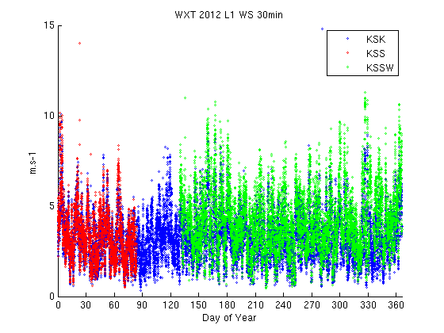
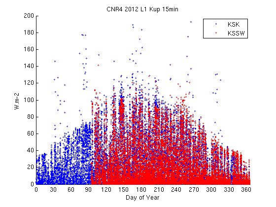
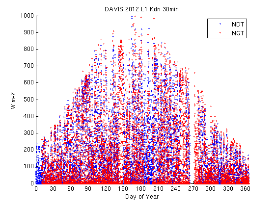
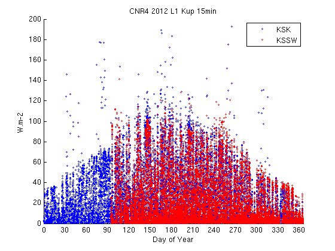
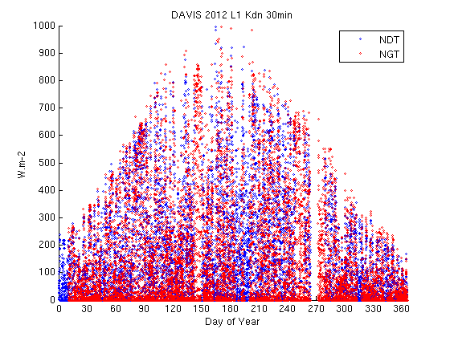
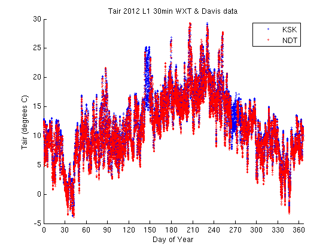
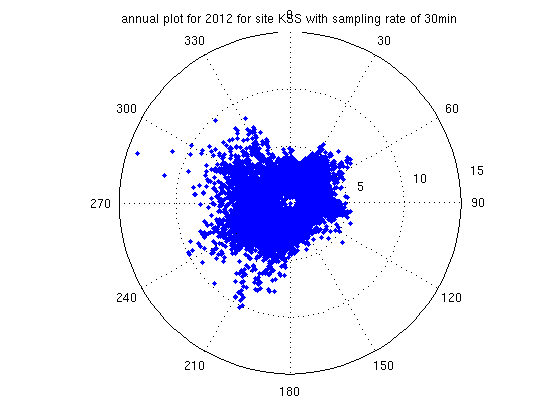

Report for the year 2012
Contents
Site information
'name' 'lon_WGS84' 'lat_WGS84' 'start' 'end'
'KSK' '-0.1161' '51.51146' '2006233' '2100001'
'KSK15S' '-0.11687' '51.51177' '2006233' '2100001'
'KSS' '-0.11635' '51.512' '2009274' '2012086'
'KSS45W' '-0.11608' '51.51133' '2009274' '2100001'
'KSN' '-0.1158' '51.5116' '2010101' '2100001'
'KSM' '-0.1154' '51.5112' 'NA' '2100001'
'BTT' '-0.1392' '51.52187' 'NA' '2100001'
'RGS' '-0.17492' '51.501517' '2009085' '2100001'
'TLI' '-0.11768' '51.50975' '2010094' '2100001'
'GL' 'NA' 'NA' 'NA' 'NA'
'NK' '-0.2134' '51.521055' '2011033' '2100001'
'EMB' '-0.1217' '51.5081' '2010173' '2100001'
'TEM' '-0.113' '51.5112' '2010173' '2100001'
'HAN' '-0.1438' '51.5139' '2011011' '2100001'
'MR' '-0.154566' '51.522528' '2011068' '2100001'
'NDT' '-0.1796' '51.4814' '2011144' '2100001'
'MT' '-0.1113' '51.5116' '2011163' '2100001'
'KSNW' '-0.115947' '51.512195' '2011284' '2100001'
'NGT' '-0.115947' '51.512195' '2011284' '2100001'
'KSSW' '-0.116722' '51.511794' '2012090' '2100001'
'NTT' '-0.115947' '51.512195' '2011284' '2100001'
'KSE' 'NA' 'NA' '2012148' '2012277'
'WMT' 'NA' 'NA' '2012150' '2012277'
'KSC' 'NA' 'NA' 'NA' '2100001'
'SJP' '-0.12948' '51.5042' '1981001' '2100001'
'UCL' '-0.131' '51.524' '2009001' '2011001'
'KSB' '-0.115947' '51.512195' '2013063' '2100001'
'LCY_EGLC' '0.07579' '51.5208' '2012001' '2100001'
'IML' '0.62231' '51.3134' '2013213' '2100001'
'IMU' '0.062045' '51.313482' '2013207' '2100001'
Annual plots
Warning: Ignoring extra legend entries. Warning: Ignoring extra legend entries. Warning: Ignoring extra legend entries. Warning: Ignoring extra legend entries. Warning: Ignoring extra legend entries. Warning: Ignoring extra legend entries. Warning: Ignoring extra legend entries. Warning: Ignoring extra legend entries. Warning: Ignoring extra legend entries. Warning: Ignoring extra legend entries. Warning: Ignoring extra legend entries. Warning: Ignoring extra legend entries. Warning: Ignoring extra legend entries. Warning: Ignoring extra legend entries. Warning: Ignoring extra legend entries.
  
  Annual stats
stats for site KSK and level L1
Columns 1 through 5
'sensor' 'variable' 'units' 'mean' 'std'
'WXT' 'WS' 'm.s-1' '3.2589' '1.3152'
'WXT' 'Tair' 'Celsius or K' '11.7173' '5.3668'
'WXT' 'RH' '%' '68.4239' '13.199'
'WXT' 'press' 'hPa' '1009.1787' '11.2134'
'WXT' 'rain_dur' 's' '44.0146' '225.2524'
'WXT' 'RR' 'mm.h-1' '0.0012708' '0.0086169'
'CNR4' 'Kdn' 'W.m-2' '225.6834' '213.8669'
'CNR4' 'Kup' 'W.m-2' '29.6129' '26.6465'
'CNR4' 'Ldn' 'W.m-2' '328.8569' '40.8905'
Columns 6 through 8
'min' 'max' 'median'
'0.32028' '14.8049' '3.1311'
'-3.7119' '29.3528' '11.3759'
'18.1056' '92.5011' '70.7151'
'969.9756' '1036.8937' '1009.3888'
'0' '2050' '0'
'0' '0.1676' '0'
'0' '1048.378' '152.1031'
'0.00030535' '192.95' '21.7322'
'212.6141' '433.2512' '336.6081'
stats for site KSS and level L1
Columns 1 through 5
'sensor' 'variable' 'units' 'mean' 'std'
'WXT' 'WS' 'm.s-1' '3.372' '1.468'
'WXT' 'Tair' 'Celsius or K' '5.5654' '3.8832'
'WXT' 'RH' '%' '72.4894' '11.2424'
'WXT' 'press' 'hPa' '1019.1346' '8.603'
'WXT' 'rain_dur' 's' '19.2479' '156.9903'
'WXT' 'RR' 'mm.h-1' '0.0008059' '0.010394'
Columns 6 through 8
'min' 'max' 'median'
'0.49805' '14.0231' '3.1872'
'-5.7511' '19.2423' '5.9329'
'34.512' '96.8442' '73.8487'
'988.5106' '1035.8572' '1020.0104'
'0' '2040' '0'
'0' '0.34529' '0'
stats for site KSS45W and level L1
Columns 1 through 5
'sensor' 'variable' 'units' 'mean' 'std'
'SKYE' 'UVA_umol' 'umol.m-2.s-1' '32.0567' '57.2663'
'SKYE' 'UVB_umol' 'umol.m-2.s-1' '0.46517' '0.71922'
'SKYE' 'PAR_umol' 'umol.m-2.s-1' '161.2458' '288.0507'
'SKYE' 'UVA_W' 'W.m-2' '2.2567' '3.5063'
'SKYE' 'UVB_W' 'W.m-2' '0.1862' '0.28956'
'SKYE' 'PAR_W' 'W.m-2' '32.0567' '57.2663'
Columns 6 through 8
'min' 'max' 'median'
'0.6153' '343.7675' '1.3455'
'0.0027272' '4.4408' '0.11334'
'3.095' '1729.157' '6.7681'
'5.5049e-07' '18.4361' '0.25204'
'1.5305e-05' '1.7941' '0.044526'
'0.6153' '343.7675' '1.3455'
stats for site KSSW and level L1
Columns 1 through 5
'sensor' 'variable' 'units' 'mean' 'std'
'WXT' 'WS' 'm.s-1' '4.1556' '1.6472'
'WXT' 'Tair' 'Celsius or K' '13.4165' '5.0593'
'WXT' 'RH' '%' '71.0675' '13.5894'
'WXT' 'press' 'hPa' '1005.0843' '9.032'
'WXT' 'rain_dur' 's' '90.353' '448.5547'
'WXT' 'RR' 'mm.h-1' '0.055054' '0.27375'
'CNR4' 'Kdn' 'W.m-2' '224.2786' '214.7135'
'CNR4' 'Kup' 'W.m-2' '16.2535' '23.0232'
'CNR4' 'Ldn' 'W.m-2' '335.9277' '37.9662'
'SKYE' 'UVA_umol' 'umol.m-2.s-1' '43.742' '69.0255'
'SKYE' 'UVB_umol' 'umol.m-2.s-1' '0.59221' '1.0047'
'SKYE' 'PAR_umol' 'umol.m-2.s-1' '220.016' '347.2028'
'SKYE' 'UVA_W' 'W.m-2' '1.006' '1.023'
'SKYE' 'UVB_W' 'W.m-2' '0.23928' '0.40588'
'SKYE' 'PAR_W' 'W.m-2' '43.742' '69.0255'
Columns 6 through 8
'min' 'max' 'median'
'0.45944' '11.315' '3.9486'
'-2.1506' '28.8703' '13.5627'
'21.5711' '94.5435' '73.5349'
'968.7104' '1031.0995' '1005.6553'
'0' '34210' '0'
'0' '4.5769' '0'
'0' '1053.6857' '151.8425'
'0.00030019' '140.9852' '3.8552'
'226.0648' '429.1058' '342.0423'
'0.002' '373.4' '4.2321'
'0.004' '5.5977' '0.048733'
'0.0044667' '1878.2667' '21.286'
'0' '4.7861' '0.644'
'0.0015333' '2.2613' '0.019733'
'0.002' '373.4' '4.2321'
stats for site NDT and level L1
Columns 1 through 5
'sensor' 'variable' 'units' 'mean' 'std'
'DAVIS' 'WS' 'm.s-1' '3.6844' '2.1'
'DAVIS' 'Tair' 'Celsius or K' '11.041' '5.4139'
'DAVIS' 'Kdn' 'W.m-2' '157.0777' '184.7222'
'DAVIS' 'RH' '%' '78.0037' '12.8707'
'DAVIS' 'press' 'hPa' '1016.7241' '11.4489'
'DAVIS' 'rain_rate' ' ' '0.039613' '0.32092'
Columns 6 through 8
'min' 'max' 'median'
'0.048' '15.8055' '3.4117'
'-3.9286' '29.2942' '10.7'
'0' '996.3276' '84.0656'
'23.2386' '98' '81.0691'
'977.012' '1045.7065' '1016.4756'
'0' '14.3661' '0'
stats for site NGT and level L1
Columns 1 through 5
'sensor' 'variable' 'units' 'mean' 'std'
'DAVIS' 'WS' 'm.s-1' '3.5093' '2.018'
'DAVIS' 'Tair' 'Celsius or K' '11.144' '5.4842'
'DAVIS' 'Kdn' 'W.m-2' '165.1242' '197.9407'
'DAVIS' 'RH' '%' '77.8835' '13.0493'
'DAVIS' 'press' 'hPa' '1013.9783' '11.4137'
'DAVIS' 'rain_rate' ' ' '0.038526' '0.38418'
Columns 6 through 8
'min' 'max' 'median'
'0.03871' '13.3667' '3.2993'
'-3.8275' '29.6649' '10.8445'
'0' '994.2813' '84.2502'
'23.3725' '97' '81.1268'
'974.5214' '1042.317' '1013.7972'
'0' '34.0476' '0'
Site Comparisons
Wind rose plots
WXT L0 data: direction in degrees, wind speed in m.s-1
